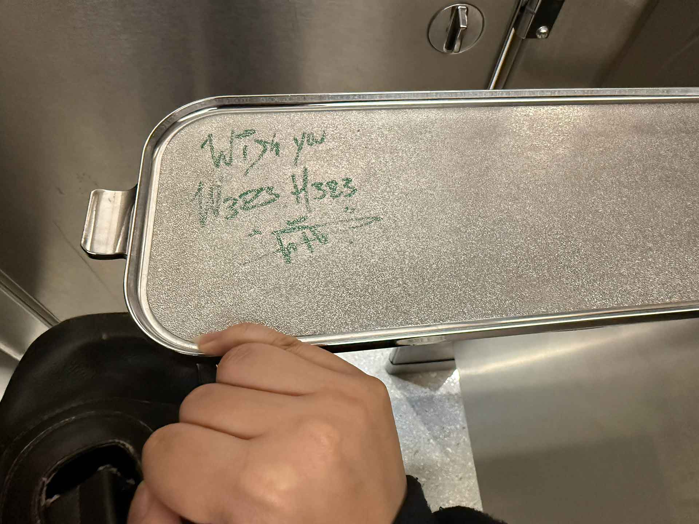

Full Review:
This is a fine bathroom. Before entering the bathroom, I noticed that there was a Braille and English-language placard for the bathroom, and the Braille appears to be correct. The bathroom itself was nothing to write home about; there was a long row of stalls, and the restroom's relatively clean. The accessible bathroom has a baby changing station but not an emergency call button (on why this matters, check out the link at the bottom of the page). The toilet is a very typical public bathroom toilet; some paper and seat cover remnants laying around, and it flushes fine, if not a bit loud. The bag platform works, and there is also a bag hook if you prefer inferior options for holding your stuff. Despite being so high up, the bathroom stall's amenities are nicely stocked. There is a metal box for period products, which is awesome.

Much to my dismay, it appears as though the crater sink is back at it again. For those not in the know, the MLK, Jr. Library, for whatever reason, has one sink that is more akin to a small pothole than a normal sink. I have never met anyone who likes the crater sink; I've certainly never used it willingly before today, but it does exist.
And it sucks. There was a little bit of brown in the crevices (for the sake of my sanity, I've chosen to assume that it's rust), and I ended up tapping the edges of the crater sink, which ate away at my soul for the rest of the day. I still don't feel clean, and I've washed my hands over 20 times in the span of 5 hours. There were little soap dispensers next to the sink that don't work, but the mounted soap dispensers do.
So, at this point, I learned that wheelchair users need the sinks to be a specific size or else they can't reach the soap dispensers. While I can't test this on account of not using a wheelchair, I did notice that the sink platform is pretty small, so if it's hard to reach, it's certainly easier to reach than some other bathroom sinks.
This bathroom's air dryers do not work. There are 3 in all sorts of different heights, and not a single one works. Luckily, there was a paper towel dispenser, but it's a bit annoying that there are so many air dryers and none of them work. What's the point of having them if you're not going to maintain them?
Finally, the pad and tampon dispensers work, though the pad button took a bit more force to press. Cool.
Overall, it's one of the better library bathrooms, but it's nothing to write home about.